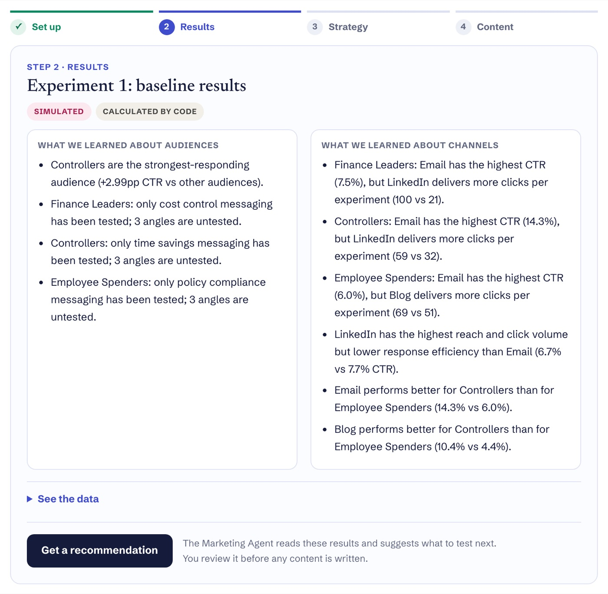
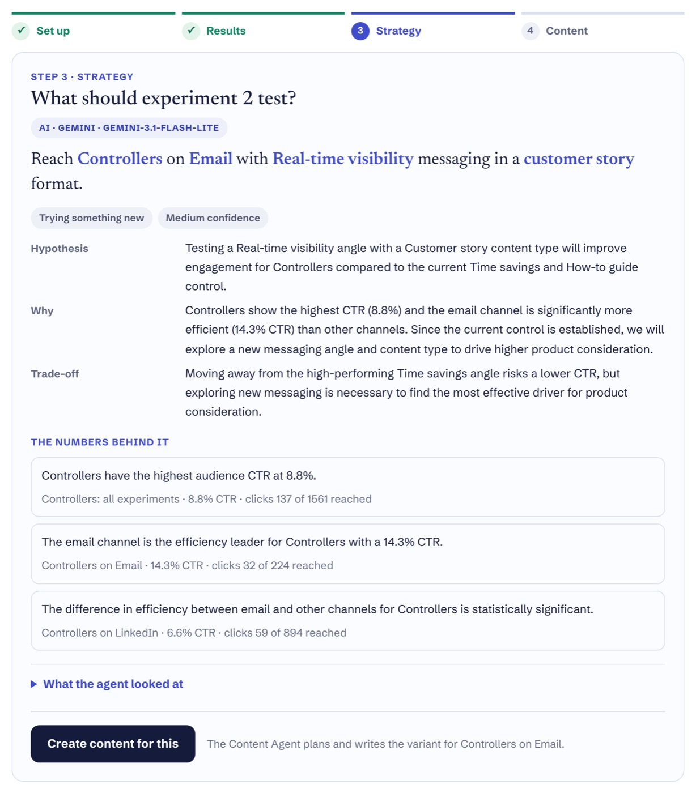
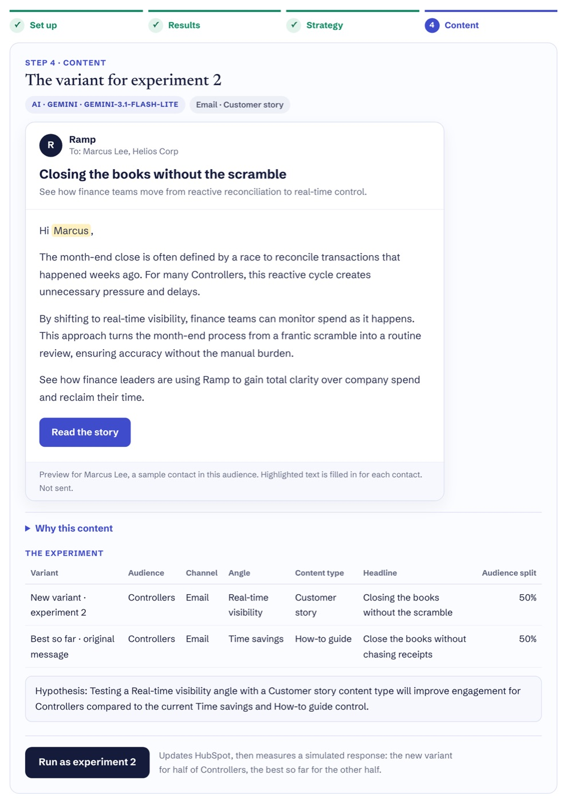
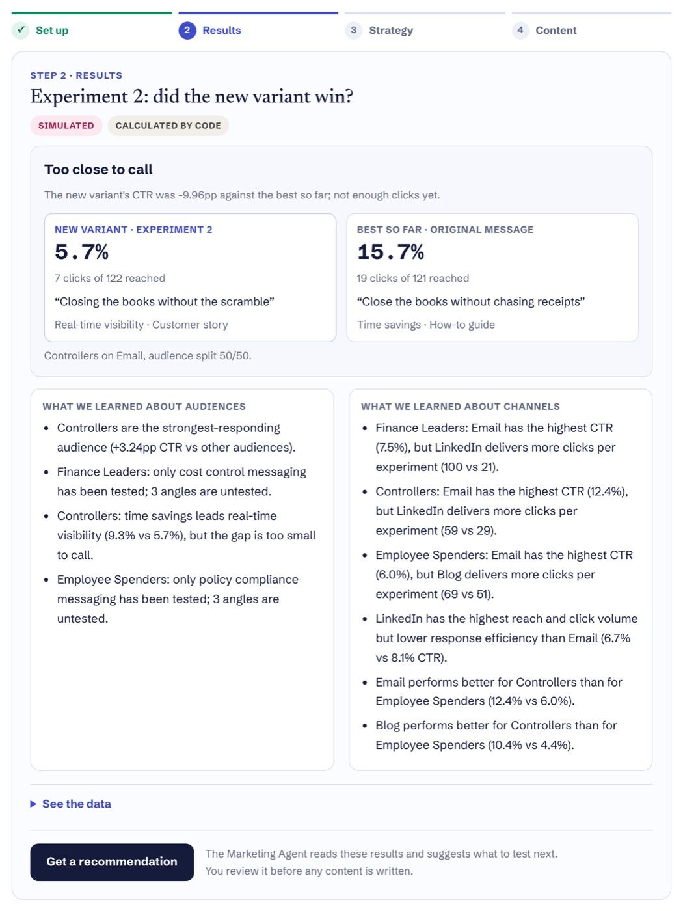

SignalLoop measures how each audience, channel and message is performing. A Marketing Agent decides who to target next, where, and with which message, and a Content Agent plans and writes the variant to test. Every experiment changes the next recommendation.
Content teams publish constantly but can't tell which audience, channel and message to test next.
Code measures what happened. A Marketing Agent chooses the strategy; a Content Agent turns it into a plan and an asset.
Every recommendation cites the metrics behind it, and every experiment runs against a control.
HubSpot CRM writes are live. Audience response is simulated. Decisions and content are AI.
Ramp segments by role; Square by business stage. Same engine, different market logic.
Netlify Functions, deterministic analytics, Groq and Gemini agents, HubSpot CRM.
Most teams publish every week and still pick the next piece on instinct. The data exists, but it doesn't answer the questions a product marketer has to make a call on:
Results sit in separate tools for each channel, so no one sees how each audience is behaving across all of them.
A two-point difference in click rate gets treated as a win, even when it is noise from a small sample.
Without a record of what was tested, every campaign starts from zero and old ideas quietly get retested.
AI writing tools make another post, email or landing page almost free. They don't know which audience is responding, which channel reaches them, or which message has already failed, so producing faster mostly produces more untested guesses. The valuable step comes before the writing: choosing the next experiment, then making sure the content actually tests it.
Product marketers make this call constantly: weighing a channel with a high response rate against one with more reach, deciding whether a result is strong enough to act on, and picking the angle to test next. SignalLoop asks AI to make that call from measured evidence, while the rules of the market stay with the marketer:
Company inputs set the rules. Code measures each experiment. The Marketing Agent reads those measurements and chooses the next strategy; the Content Agent turns it into a plan and an asset. The experiment runs against a control, and its results feed the next decision.
The engine calculates reach, clicks, CTR, pooled history, efficiency and volume leaders, and whether a gap is too small to call.
Who, where and why: the priority audience, channel, messaging angle and content type, plus the hypothesis to test.
What to create and how to say it: topic, hook, headline, key message, CTA, format and brief, then the asset itself.
The Marketing Agent chooses the strategy. The Content Agent executes it. Code keeps both honest.
Anyone can claim their system is strategic. The test is whether the strategy changes when the market does. The same code runs two very different companies, each segmented on purpose:
Spend touches finance leadership, accounting, and every employee who buys.
One owner wears every hat, so maturity matters more than title.
Swap one company-profile file and the system changes who it targets, which channels it weighs, and which messages it can test. Nothing else in the code changes.
Screenshots from one run of the live demo for Ramp: the baseline results, the Marketing Agent's recommendation, the Content Agent's email, and the result of testing it against the best version so far. Every number is SIMULATED. Results and insights are CODE. The recommendation and the email are AI output (Gemini in this run), shown unedited. Try the live demo to run your own.




Run the loop one step at a time. Start with a baseline campaign and SignalLoop measures how each audience and channel responds. Ask the Marketing Agent what to test next and review its recommendation, then have the Content Agent create the variant. Run it against the best version so far, and the next recommendation builds on what happened.
Reach, clicks and CTR are simulated, and no emails or posts are sent. HubSpot contact and list updates are real when the CRM label shows LIVE. Analytics are calculated by code; the Marketing and Content Agents (Groq, with Gemini as fallback) only read those computed metrics and must cite them.
The demo runs on real infrastructure, but it has no real audience. Anything that depends on how people would respond is simulated, and it is marked that way everywhere it appears, including inside the live demo.
| Component | Status | What that means |
|---|---|---|
| HubSpot CRM | LIVE | Fictional sample contacts, the persona property and audience lists are written through the HubSpot API. |
| Campaign delivery | SIMULATED | No emails or social posts are sent. |
| Performance data | SIMULATED | Reach and clicks come from a model of how each audience responds to each channel, message and content type. The agents never see the model, only the measured results. |
| Analytics | CODE | Deterministic calculations over the simulated results. |
| Marketing recommendation | AI | Generated by the Marketing Agent (Groq, with Gemini as fallback). |
| Content plan and asset | AI | Generated by the Content Agent. |
| Experiment history | STORED | Each visitor's experiments are saved in Netlify Blobs. |
The decision loop is the part this project proves. Turning it into a system a marketing team runs every week would take changes in six areas:
Replace the simulator with email engagement from HubSpot Marketing Hub, social data from each network, and site analytics, with attribution to pipeline.
Publish through HubSpot's email and social tools, with a human review step for brand, legal and product claims before anything goes out.
Sample sizes and test durations set in advance, protection against acting on early results, and more than two variants per test.
An evaluation set for the agents' decisions and content, a log of every tool call and output, and stricter checks on claims.
Paid model tiers with cost budgets per campaign, and consent and privacy controls for real contact data.
Optimize for pipeline and revenue rather than clicks alone, and connect the Marketing Agent's recommendations to budget decisions.
Generating content was the easy part. The leverage came from deciding what the AI should decide, and making every decision traceable to data.
That is how I approach product marketing generally: find the decision that matters, measure it honestly, and build the system so judgment compounds instead of starting over every week.